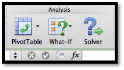
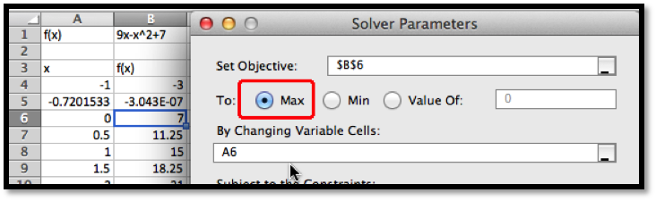
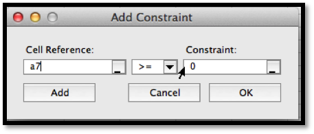
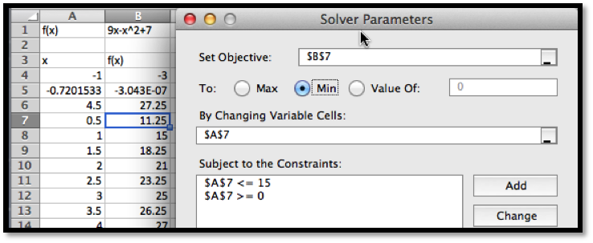

Example 3.5.1. Use Solver to gather information about the graph.
Solution.
As always, we start by using simpler tools. In this case it is useful to have Excel sketch a graph and to use information we gathered in prior course. From the form of the function we know the graph is a parabola that points downwards.

Looking at the chart and the picture we see that the vertex is close to \(x=4.5\text{.}\) We also see that the x-intercepts are close to \(x=-0.5\) and \(x=9.5\text{.}\)
Next, we want to make sure that Solver is installed. It should be on the Analysis section of the Data tab.

If you don’t find it there, you should go to the online help for Excel, and look for help on Solver. Under the topic “Define and solve a problem by using Solver”, select first “Define and solve a problem”, then “If you don’t see Solver under Analysis on the Data tab”.
We first want to use Solver to find a root. Using the same approach we used with Goal Seek, we would like cell
B5 to be set equal to 0 by changing the value of cell A5. (As we have set up the problem, we could use solver starting with any of the cells that give a value for \(f(x)\text{.}\) I chose the one that has \(f(x)\) closest to the desired result.)

Solver finds a solution with \(x=-0.72015\text{.}\) We are given a dialog box that asks if we want to keep the solver solution or restore our original value.

As with Goal Seek, if we use Solver again, starting with \(x\) closer to 9, we will find a solution \(x=9.72015\text{.}\)
We introduce Solver because it can do things would be more difficult with Goal Seek. From the graph, and our knowledge or parabolas, we know the graph has a single maximum. To find the maximum with Goal Seek, we need to realize that the maximum occurs when the derivative is 0, define the numerical derivative, then set the derivative equal to 0. With Solver, we simply ask it to find the maximum. It finds the vertex at \(x=4.5\text{.}\)

We also would like to be able to find a minimum. From the picture, we know that a downward pointing parabola has no absolute minimum. However, in business, we are typically concerned with functions defined on a finite domain. For this problem, consider only the interval \(0\le x\le 15\text{.}\) We want the minimum to appear in cell
B7, so we want to constrain cell A7. If we start Solver, then hit the add button, we get a dialog box to enter the first constraint, that A7\(\ge 0\text{.}\)

In a similar manner, we add the constraint that \(A7\ge 15\) and ask solver for a minimum.

Since we started the search for the minimum at \(x=0.5\text{,}\) Solver finds the minimum at \(x=0\text{.}\) This is a “local minimum”. Any \(x\) value in the interval that is close by gives a higher value for the function.
We would also like to find the minimum at the other end of the interval. To do that it is useful to know a bit of the mathematics behind what solver is doing. Solver uses derivatives from the starting point to decide on the direction it should look and how far it should go to find the next guess for its answer. This is a modification of a technique called Newton’s method. In terms of our picture, depending on whether we tell it to find a maximum, minimum, or specified value, Solver tries to slide up or down the graph until it finds a good candidate, which it gives us as a solution. It is actually looking for the first local maximum or minimum it gets to. It does not look for other candidates. So if we started at \(x=0.5\text{,}\) it will slide to the left to find an answer. To find the minimum at the other end of the interval, we need a starting point where the graph is already sloping down to the right. Starting at \(x=8\) should work. We set up Solver.